The Oregon Trail
A True Account From the Diary of James Akins
During the time span of about 1830 to the late 1880’s, and great historical event occurred in America. Thousands of people voluntarily uprooted their lives to cross the vast and uncharted west to travel to the Oregon Territory. This great migration was known as the Oregon Trail.
The Oregon Trail was not an easy venture, nor was it a journey for the faint of heart. It was a long strenuous trek which claimed the lives of many who set out west. This is known by the many firsthand accounts written by those travelers, through these accounts it is easy to obtain a vivid picture of what that journey was like.
Oregon Trail Party
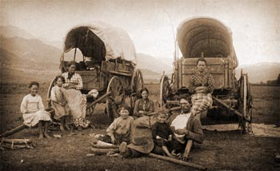
This particular story is about a party made of four families, the Akin, Booth, Ingram, and Ritchey families. In 1852 they decided to make the large move from Salem, Iowa to Portland, Oregon taking the Oregon Emigrant trail. In total the party was made up of 39 people, 10 adults and 29 children, the children ranging from age nineteen to infancy. A party of this size, especially one of such a large age range, was not an easy move. There were an abundance of hardships and trials that these families faced.
Salem, IA
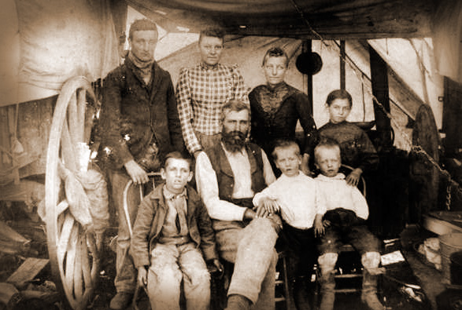James Akin, Jr., who was 19 years old when his family set off for the Oregon Trail, was the eldest of the children. He kept a journal where he nearly entered their progress and any major events they encountered on the trail nearly everyday. Each entry was short and to the point, but it still gave a good outline of the family's journey and struggles.
He starts his diary on Thursday, April 15, 1852 when the party leaves their old home, Salem, Iowa. For the first couple days he comments on the weather, that the roads are good, that they crossed a creek, and that their wood supply is good.
Fording Rivers
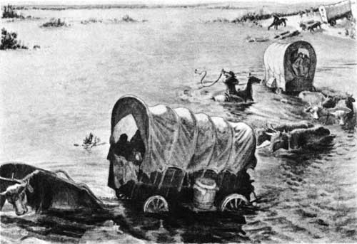Crossing rivers and streams was common along the Oregon Trail. Many times throughout the diary, Akins speaks of how the party forded a river, took a ferry, or a toll bridge across. Crossing rivers, however, did lead to several mishaps to many emigrants. For instance, on May 7th, Akins reported that a boat sank on the Nishnabotna River. Additionally, as the party approached the Missouri river, Akins mentions that one man in a different party drowned on May 11th from a ferry flipping over. He mentions again that a boat sinks on May 14th.
Using Resources on the Trail
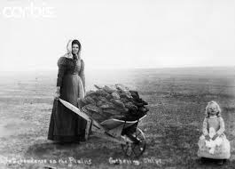
To sustain themselves for the whole journey, they had to use what they could long the way, so hunting and gathering was a regular part of their routine. Akins reports that on June 7th the party hunted for antelope. They also collected Buffalo chips (dried buffalo dung) to use for fire fuel.
Landmarks
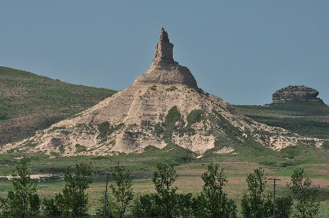Sickness was the greatest hardship and killer which took the lives of many emigrants, including those in this party. On June 14th, as the party approached two major landmarks on the trail, Chimney rock and Scotts bluff, where they stopped to camp because of the sickness of a party member. On June 16th,the first life is claimed on the trail as Louisa Ritchey, wife of Stuart Ritchey, dies of cholera at the age of 29.
Hardships Ahead
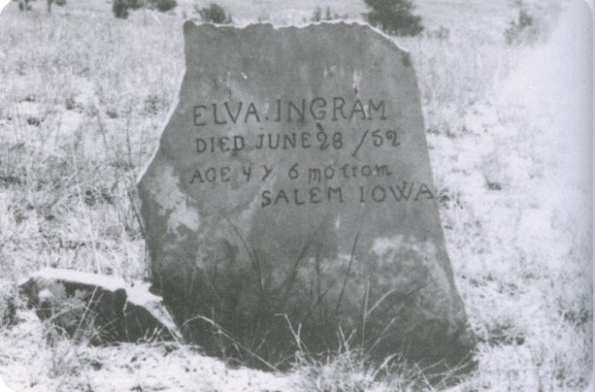Hardships continue on the trail as once again sickness makes its rounds among the company. Another death occurs on June 23st, as the Elva Ingram, young daughter of James and Ritta Ingram, dies. The party continues, but hardship still continues as the party goes without water for several miles. They finally run into the Platte River, where they can quench their thirst, but resources still run low as they cannot find grass for the cattle. They find themselves in a wood shortage as well until they pass more timber and grass filled areas on June 28th.
Natural Scenery
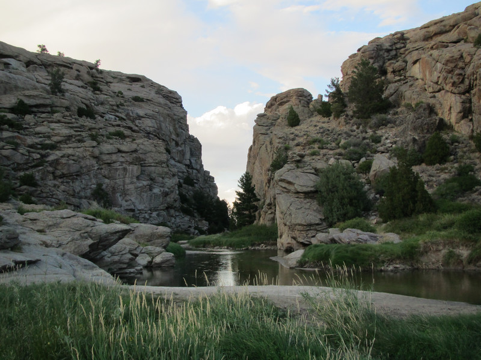The Oregon Trail did not lack in natural beauty. Along the way were an abundance of amazing scenery and iconic natural features. On July 2nd the company passed two of these features, Independence Rock and Devil Gate.
Rocky Mountains

The trek continues as the company passes over summits of Rocky Mountains on July 10th through the South Pass. The climb is gradual, and Akins comments on the pleasant weather and good roads.
Idaho Boarder
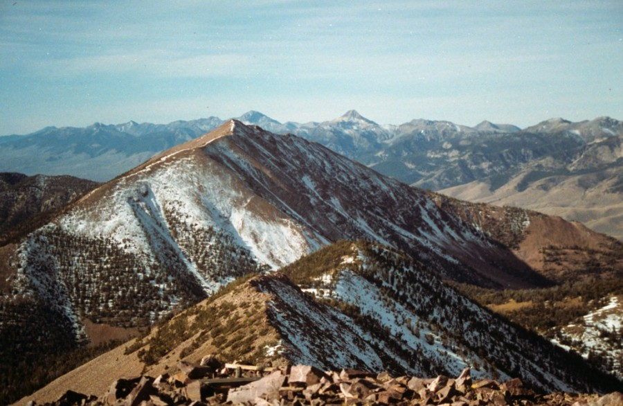The party is coming closer and closer to their goal as the Idaho boarder quickly approaches. Nearing the Idaho Line in late July. They have to go over the more rugged summit of the Bear Mountains which Akins describes as rough and hilly. A week later, however, the company becomes sick again, and one of the children of Caleb and Alice Ritchey, Miranda Ritchey, passes away on July 31st.
Drought Ahead
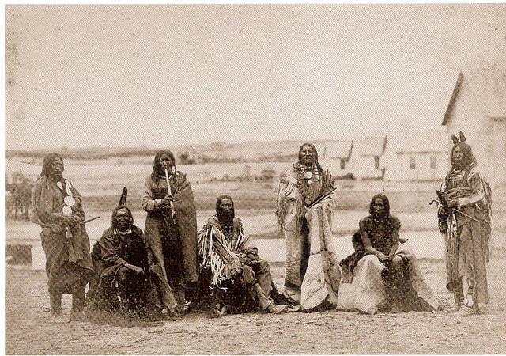On August 8th, Akins reports that they had gone without water for over 13 miles as they travel dusty roads with dead cattle scattered through the landscape. The hot, dry trek goes on, the party even travels at night more often than day to avoid the heat. On August 14th, they come across some Native Americans and they trade tea and salt for fresh salmon. Fresh food at this point in the journey was more scarce and therefore highly valued.
Tragedy on the Trail
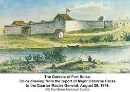A tragic few weeks is about to begin when Eliza Akin (mother 38) become sick and dies of typhoid fever. A couple days later, on August 22nd, Moses Rhodes dies. There is nothing else to do but continue the journey. They reach Fort Boise, but after leaving, the party becomes sick once again in early September. The party decides to rest for a while, but still the lives of Eliza Ritchey (6 years old) and Abe Gilliam are claimed on September 9th and 15th.
Grande Ronde and Blue Mountains
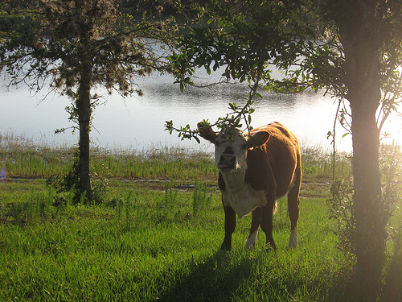On September 16th, the party approaches the west Side of Grande Ronde river and are about to cross the Blue mountains. Akins reports that they unfortunately lose 9 head of cattle, which causes a great nuisance to the travelers. They spend some time looking for the renegade cattle and then continue their journey.
John Day River
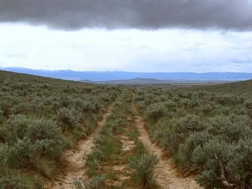The party continues, however hardships do not cease even as they come closer and closer to their destination. Water becomes scarce, and the party fears the worst as the days go on. They finally come across the John Day river five days later on October 1st.
Rafting the Columbia
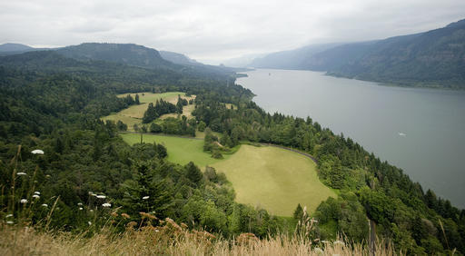On October 1st, the party is within 2 miles from the Dales and is extremely close to their goal. The last leg involves rafting down the Columbia river. This endeavor of making their own raft takes a lot of preparation. Akins states that they “cut logs and cork wagon beds water tight all day” (55). They continue with their rafting preparations for several days, and then they take off on it on October 6th. Even after the raft is in the water, they have to take it out to make modifications on October 11th.
The Journeys End
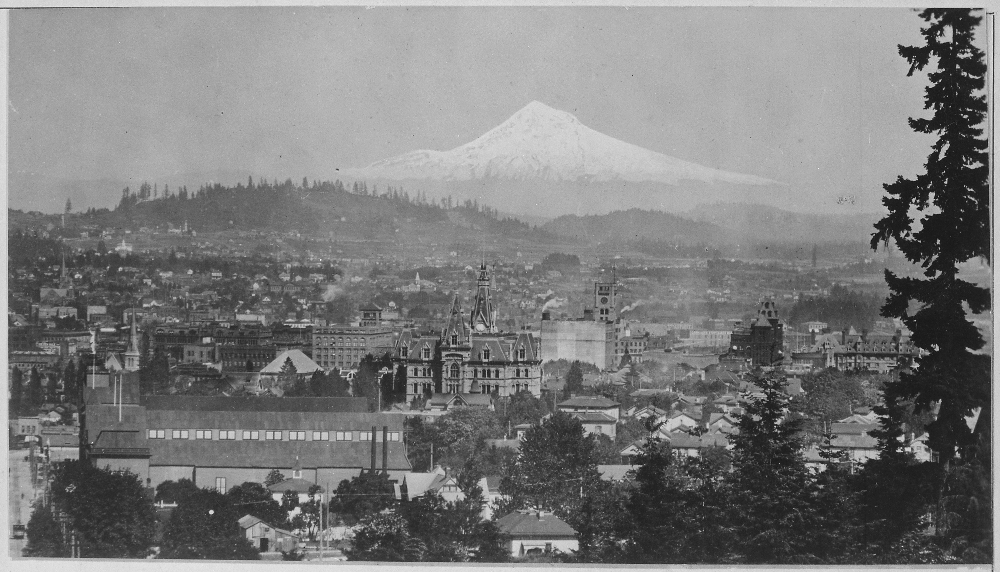The rafting leg of the journey finishes on October 14th when the party lands in a small settlement in the Cascades. From there, they take a steamboat the rest of the way to Portland. Tired, sick, and ragged they finish their journey of nearly 2,000 miles in a timespan of six months. All families are able to make Donation Land Claims in the Willamette Valley. The story of the long journey of the Akin, Booth, Ingram, and Ritchey families ends there.